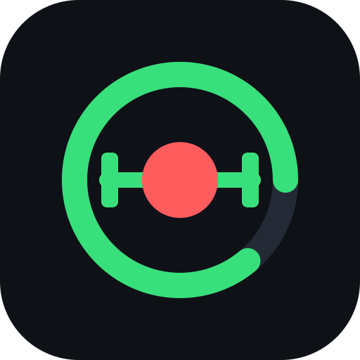

Lockup principal
Monogramme
Le G porte un dégradé acier (blanc → #A2A7AF) et le point REC dans sa contre-forme. Il reste lisible jusqu'à 20 px : les détails se fondent, la silhouette tient.

Jetons
Règles d'emploi
Le charcoal porte tout : fond de l'app, fond des cartes (un cran plus clair), filets.
Le steel est la couleur d'action : bouton principal, onglet actif, anneau du chronomètre,
pastilles de séries. Le texte posé dessus est en charcoal (17:1).
Le rouge REC n'est jamais un aplat de grande surface. Il tient le point du logo, le « REC »
du logotype, le filet sous les titres, le témoin d'enregistrement, les records et les totaux.
Le blanc est réservé aux chiffres et aux titres — ce qu'on lit en premier.
Couleurs de donnée
À part : elles ne portent pas la marque, elles servent à distinguer des mesures entre elles. Validées pour le fond des cartes (clarté, chroma, daltonisme, contraste).